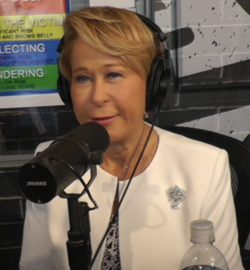
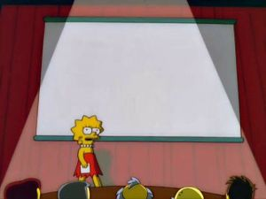
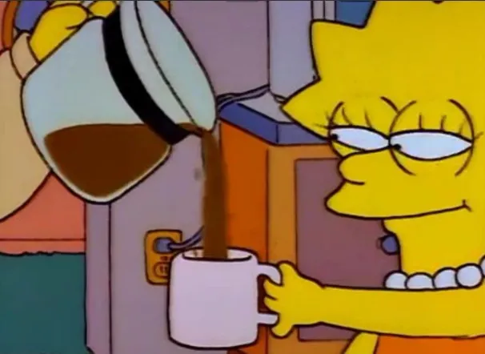
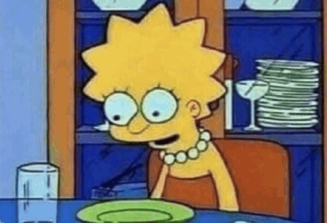
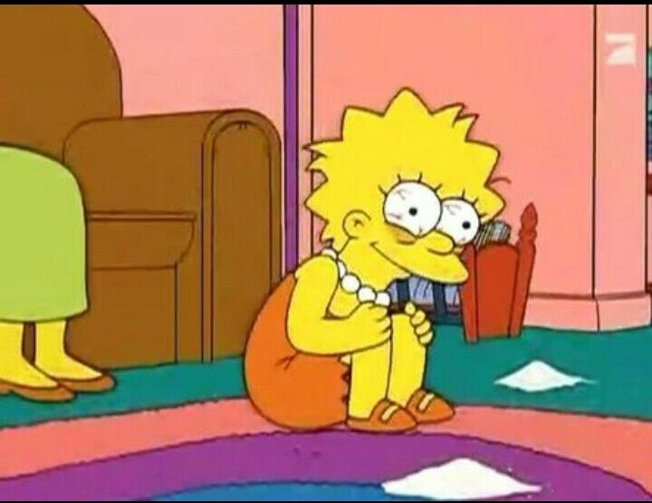
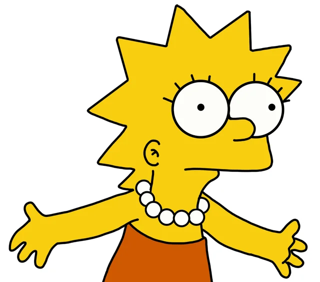

Lisa Marie Simpson
Lisa Marie Simpson is a fictional character and one of the main protagonists in the animated television sitcom series The Simpsons. She is the middle child of the Simpson family. Voiced by Yeardley Smith, Lisa was born as a character in The Tracey Ullman Show short "Good Night" on April 19, 1987. Cartoonist Matt Groening created and designed her while waiting to meet James L. Brooks. Groening had been invited to pitch a series of shorts based on his comic Life in Hell, but instead decided to create a new set of characters. He named the older Simpson daughter after his younger sister Lisa Groening Bartlett. After appearing on The Tracey Ullman Show for three years, the Simpson family were moved to their own series on Fox, which debuted on December 17, 1989. Lisa has appeared in every episode of The Simpsons except for "Carl Carlson Rides Again".

Yeardley Smith



